锈湖天堂岛 · 模型审阅
2026年11月15日。这里展示本批导出的 54 个工厂/状态变体，点击图片可以看原尺寸。GLB 保存静态外观，剧情状态、人物骨架姿势和点击逻辑仍由源码控制。
素材来源与重建说明 · 逐件尺寸与 SHA256
正式游戏机位
逐件交换素材
54 / 54
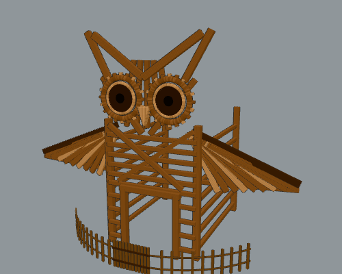
p10_wood_owlprops_p10 · 16,652 顶点下载 GLB · 旋转查看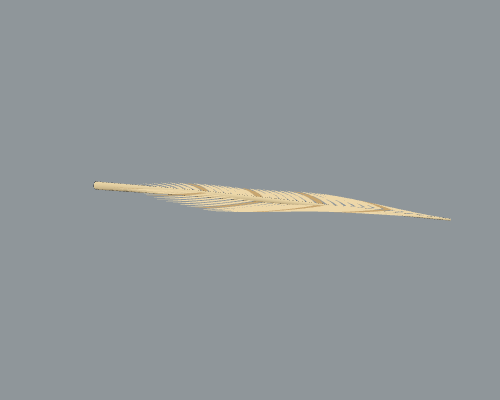
p10_featherprops_p10 · 1,383 顶点下载 GLB · 旋转查看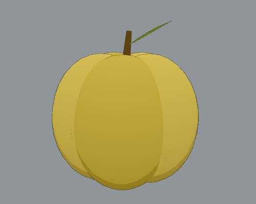
p10_appleprops_p10 · 11,293 顶点下载 GLB · 旋转查看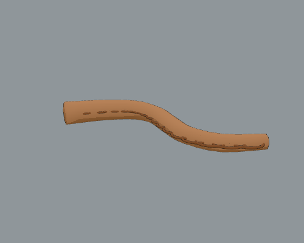
p10_wormprops_p10 · 30,947 顶点下载 GLB · 旋转查看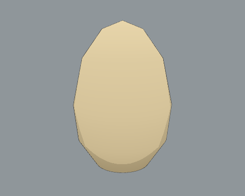
p10_eggprops_p10 · 287 顶点下载 GLB · 旋转查看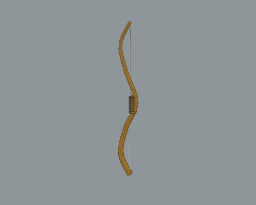
p10_bowprops_p10 · 21,574 顶点下载 GLB · 旋转查看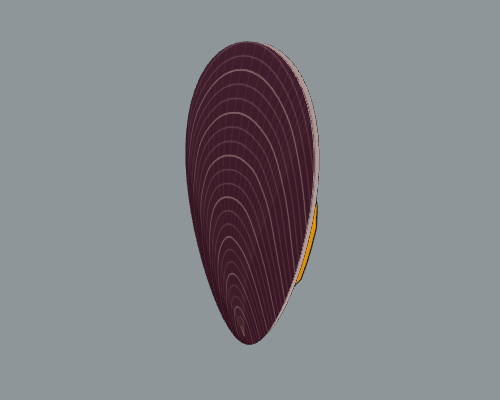
p3_mussel_shellprops_p3_beach · 4,713 顶点下载 GLB · 旋转查看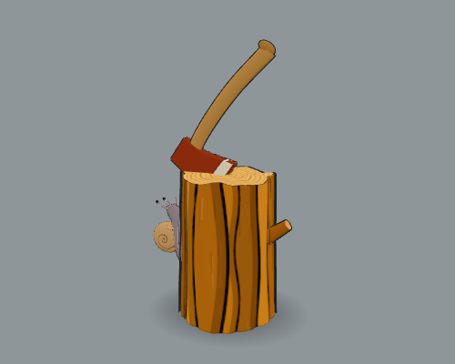
p3_stumpprops_p3_beach · 24,065 顶点下载 GLB · 旋转查看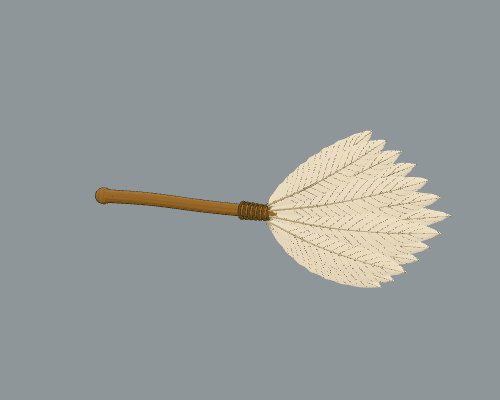
p3_swatterprops_p3_items · 87,936 顶点下载 GLB · 旋转查看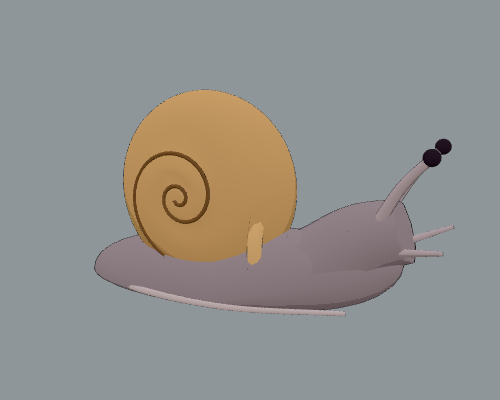
p3_snailprops_p3_items · 20,970 顶点下载 GLB · 旋转查看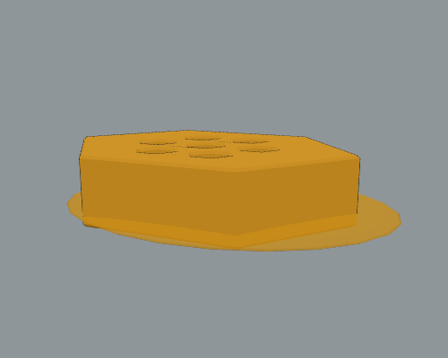
p3_honeyprops_p3_items · 1,775 顶点下载 GLB · 旋转查看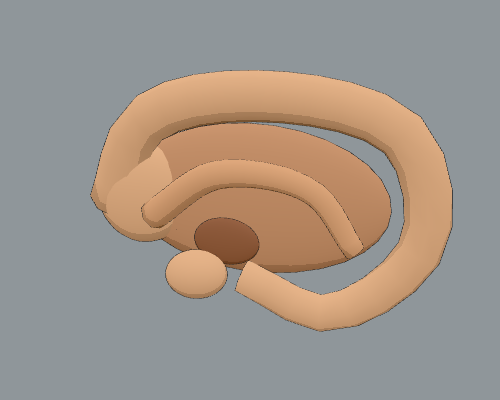
p3_earprops_p3_items · 5,624 顶点下载 GLB · 旋转查看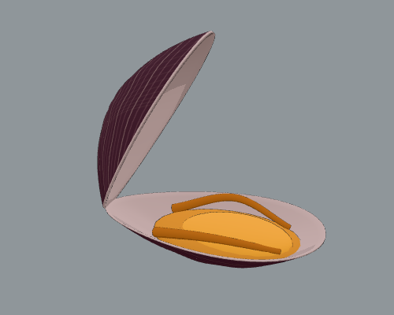
p3_musselprops_p3_items · 7,286 顶点下载 GLB · 旋转查看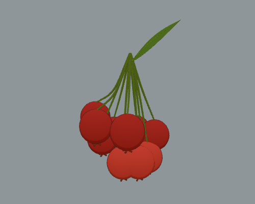
p3_berriesprops_p3_items · 90,026 顶点下载 GLB · 旋转查看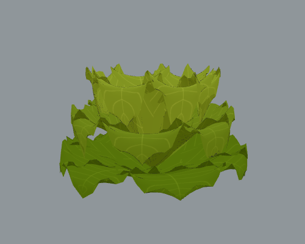
p5_lettuceprops_p5 · 41,472 顶点下载 GLB · 旋转查看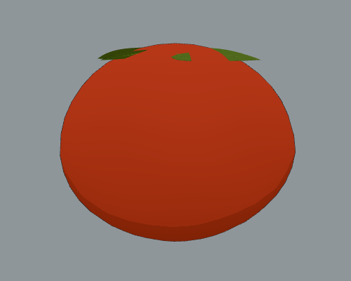
p5_tomatoprops_p5 · 8,127 顶点下载 GLB · 旋转查看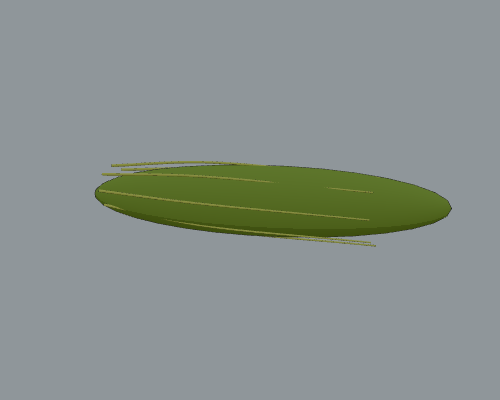
p5_cucumberprops_p5 · 10,025 顶点下载 GLB · 旋转查看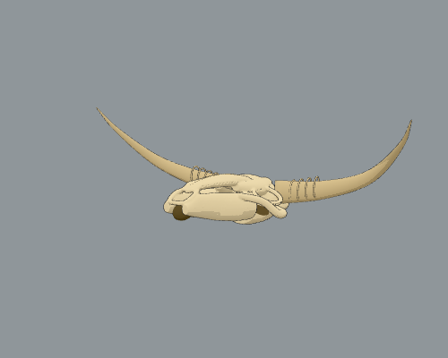
p6_skullprops_p6 · 27,533 顶点下载 GLB · 旋转查看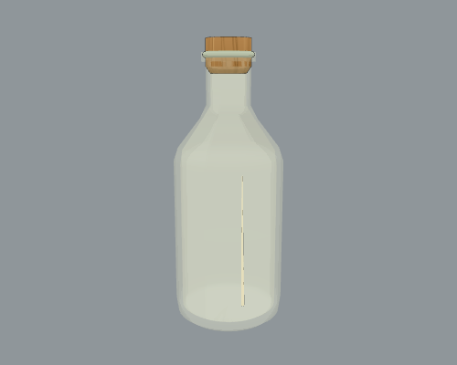
p6_empty_bottleprops_p6 · 1,580 顶点下载 GLB · 旋转查看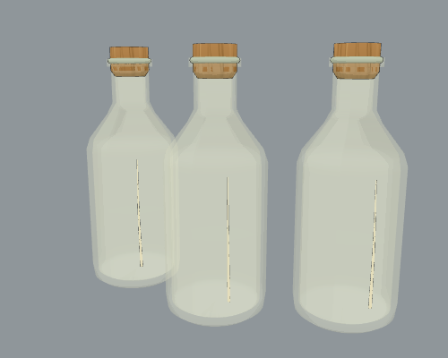
p6_bottlesprops_p6 · 4,740 顶点下载 GLB · 旋转查看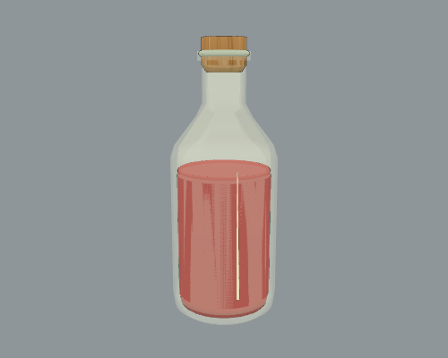
p6_bloodprops_p6 · 2,195 顶点下载 GLB · 旋转查看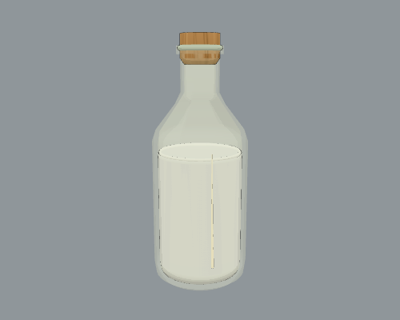
p6_tearsprops_p6 · 2,195 顶点下载 GLB · 旋转查看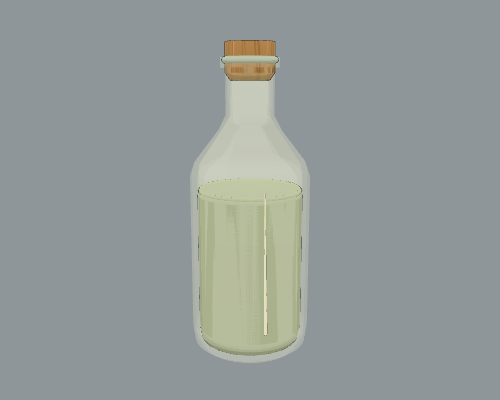
p6_snotprops_p6 · 2,195 顶点下载 GLB · 旋转查看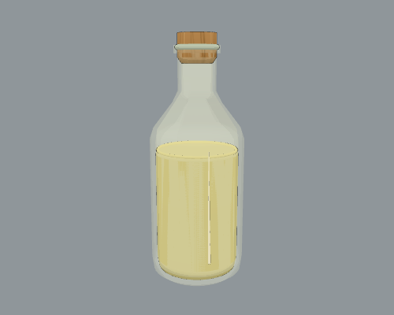
p6_salivaprops_p6 · 2,195 顶点下载 GLB · 旋转查看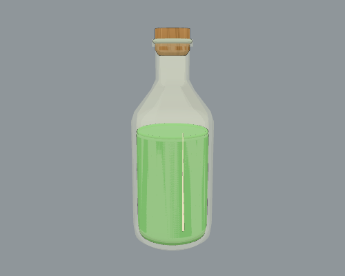
p6_medicineprops_p6 · 2,195 顶点下载 GLB · 旋转查看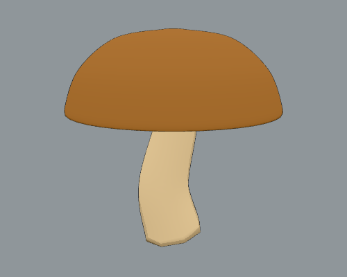
p6_mushroomprops_p6 · 8,214 顶点下载 GLB · 旋转查看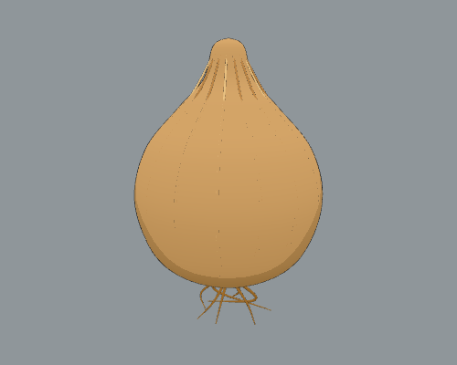
p6_onionprops_p6 · 7,987 顶点下载 GLB · 旋转查看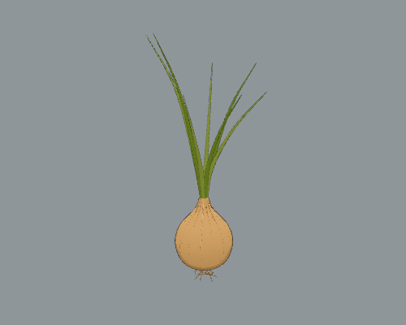
p6_onion_plantprops_p6 · 9,576 顶点下载 GLB · 旋转查看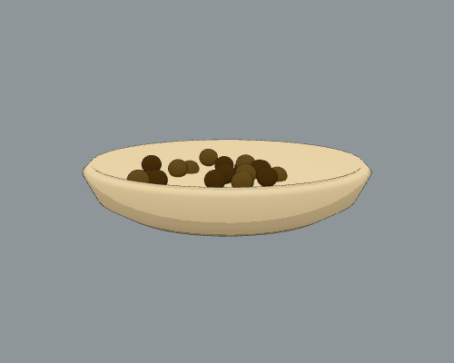
p6_pepperprops_p6 · 45,647 顶点下载 GLB · 旋转查看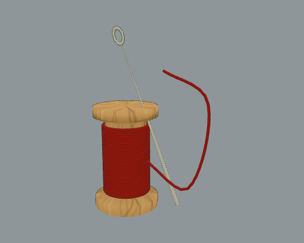
p6_needle_threadprops_p6 · 62,550 顶点下载 GLB · 旋转查看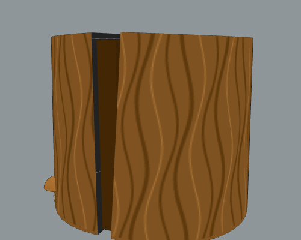
p6_stumpprops_p6 · 8,462 顶点下载 GLB · 旋转查看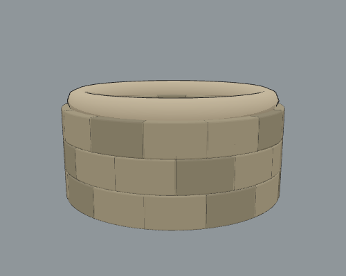
p6_wellprops_p6 · 27,157 顶点下载 GLB · 旋转查看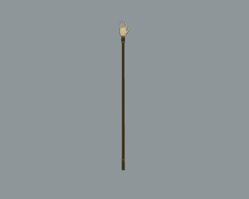
p6_staffprops_p6 · 20,139 顶点下载 GLB · 旋转查看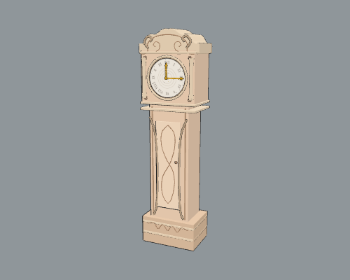
p6_clockprops_p6 · 48,633 顶点下载 GLB · 旋转查看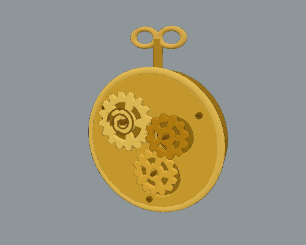
p6_clock_heartprops_p6 · 33,754 顶点下载 GLB · 旋转查看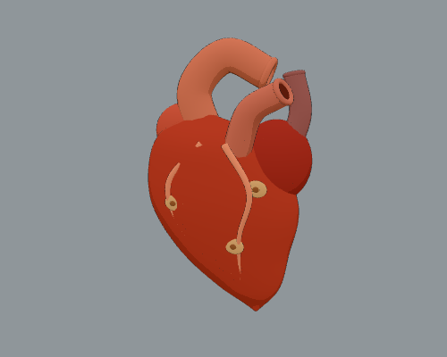
p6_sick_heartprops_p6 · 26,587 顶点下载 GLB · 旋转查看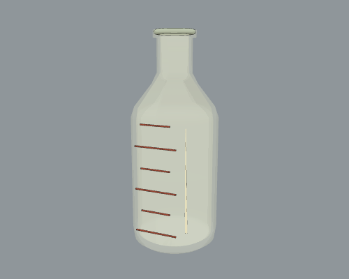
p6_flaskprops_p6 · 6,775 顶点下载 GLB · 旋转查看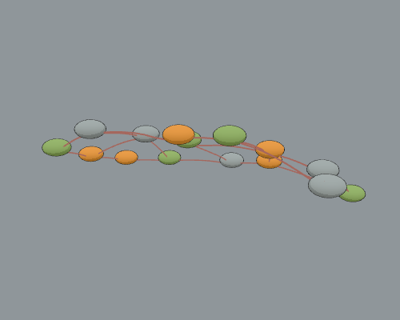
p6_chestprops_p6 · 13,247 顶点下载 GLB · 旋转查看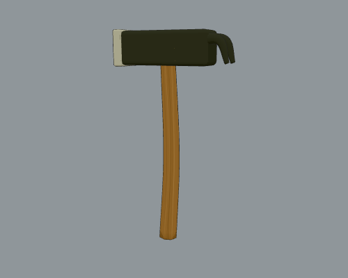
p7_hammerprops_p7 · 4,427 顶点下载 GLB · 旋转查看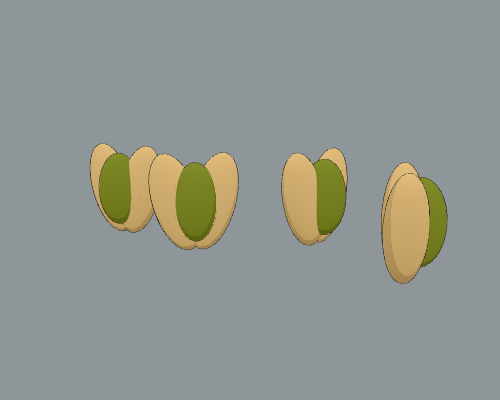
p7_pistachioprops_p7 · 25,920 顶点下载 GLB · 旋转查看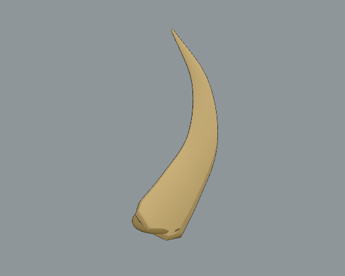
p7_hornprops_p7 · 622 顶点下载 GLB · 旋转查看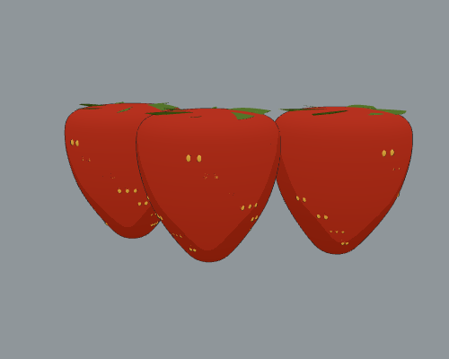
p7_strawberryprops_p7 · 372,222 顶点下载 GLB · 旋转查看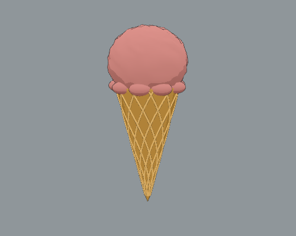
p7_ice_cream_strawberryprops_p7 · 49,311 顶点下载 GLB · 旋转查看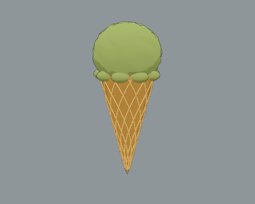
p7_ice_cream_pistachioprops_p7 · 49,311 顶点下载 GLB · 旋转查看p7_carrotprops_p7 · 23,762 顶点下载 GLB · 旋转查看p7_skull_pileprops_p7 · 28,986 顶点下载 GLB · 旋转查看p8_axeprops_p8 · 766 顶点下载 GLB · 旋转查看p8_shovelprops_p8 · 1,063 顶点下载 GLB · 旋转查看p8_keyprops_p8 · 4,680 顶点下载 GLB · 旋转查看p8_mandolinprops_p8 · 47,776 顶点下载 GLB · 旋转查看p8_lanternprops_p8 · 2,343 顶点下载 GLB · 旋转查看p8_bonesprops_p8 · 27,877 顶点下载 GLB · 旋转查看p9_bonesprops_p9 · 5,247 顶点下载 GLB · 旋转查看p9_copper_keyprops_p9 · 2,374 顶点下载 GLB · 旋转查看原作实况参考帧
仅保存用于核对外形与姿势的抽帧；视频链接和章节对应见说明。
P01P02P03P04P05P06P06_heartsP07P08P09P10